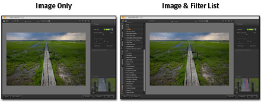
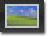

Filter Display Modes
Color Efex Pro 3.0 offers two Filter Display Modes: Image Only and Image & Filter List. Click on the Image & Filter List button to display the Filter List, which provides access to the filters available within Color Efex Pro 3.0. Additionally, Filter Category Tabs are available, providing recommendations for certain filters specific to a photographic style.
Image Only
Click
this button to show only the Image and Preview with the current filter controls.
Shortcut: Alt (Windows) / Option (Macintosh) + 1
Image & Filter List
Click
this button to open a new palette displaying the names of available filters next
to the Image Preview area.
Shortcut: Alt (Windows) / Option (Macintosh) + 2
Filter List Controls
Click on a tab to explore new filters.
Click on the name of a filter to update the image in the Image Preview and the filter control sliders and settings.
Click the star next to a filter’s name to add the filter to your Favorites tab for easy access.
Filter Category Tabs
The filters in Color Efex Pro 3.0 are organized by category for easy experimentation, with each category corresponding to a tab in the Filter List. Filter Category Tabs organize dozens of filters and variations into a manageable workspace.
The Favorites tab is user-definable, containing only filters you add.
All other tabs are pre-defined. Six tabs will be displayed, with
the All and Favorites tabs always present. The remaining four tabs
can be selected from within the Filter Settings.
The available tabs
are:
All Tab
All available filters, in alphabetical order.
Stylizing Tab
Filters that create a photographic style or an abstract transformation.
Traditional Tab
Filters that enhance an image like a conventional photographic filter or that mimic a conventional photographic process.
Landscape Tab
Filters that enhance or add a style to landscape and travel photography.
Portrait Tab
Filters most useful for images of people, in both studio and environmental portraiture.
Wedding Tab
Filters often used by wedding photographers.
Nature Tab
Filters often used by nature, wildlife, and macro photographers.
Artistic Tab
Abstract and stylistic filters to create different moods.
Favorites Tab
Filters you add using the Filter List or the Selective Tool. To add to your Favorites tab, you must be in the tab containing the desired filter. You can then add a favorite by one of the following methods (a maximum of 16 filters can be added to the Favorites tab):